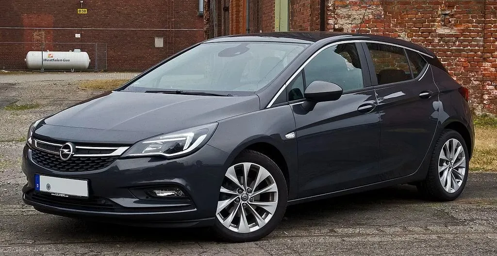

☆ The OPEL Astra K ☆

In here you are going to find out everything about the new generation of Astra.
General info
UK showrooms in October 2015, priced from £15,295. The range consisted of 99bhp 1.4, 104bhp 1.0T, 124bhp and 148bhp 1.4T, and 197bhp 1.6T petrol engines; all of these were turbocharged, except the 99bhp unit. A 1.6 CDTi diesel motor with 109, 134 or 158bhp was also offered.
Initially the car came only as a five-door hatchback, but by March 2016 there was a five-door estate, called the Sports Tourer, with the same engines and trims as the hatch. From April 2018 a new range-topping Ultimate trim was offered only on the hatch.
A facelifted Astra arrived in September 2019 with aerodynamic improvements to improve fuel economy, a nine-speed automatic gearbox, upgraded engines and extra driver-assistance systems.
Which one should you buy?

All of the engines, gearboxes and trims are decent enough, but the non-turbo 1.4 feels weak compared with the alternatives. Entry-level Design trim gets 16-inch alloys, air-con, cruise control, electrically adjustable, heated door mirrors, all-round electric windows and a seven-inch touchscreen with Bluetooth.
Each trim adds to that list, with Tech Line also featuring upgraded infotainment with nav, while Energy has 17-inch wheels, plus heated front seats and steering wheel. SRi has sports seats, 17-inch rims, auto lights and wipers, plus extra safety systems. The Elite has leather, heated rear seats, dual-zone climate control, and nav on Elite Nav trim. Ultimate adds LED headlights, 18-inch wheels and further safety systems.
All the car configurations with different engines
- Astra 1.0 Turbo 105HP Start/Stop Specs
- Astra 1.0 Turbo 120 Years Edition
- Astra 1.0 100HP
- Astra 1.4 Turbo 120 Years Edition
- Astra 1.4 Turbo 125HP
- Astra 1.4 Turbo 150HP - Link to more info about this engine
- The most reliable one so far
- Very good fuel consumption (6.3L/100 average)
- Astra 1.6 Turbo 200HP